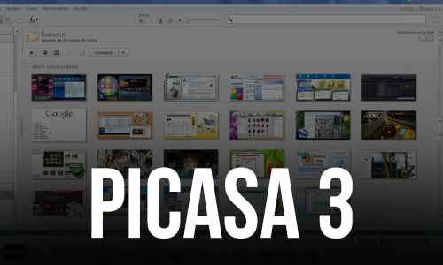
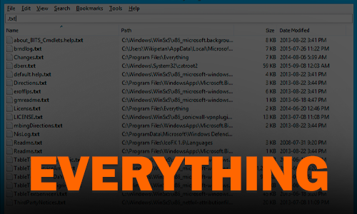
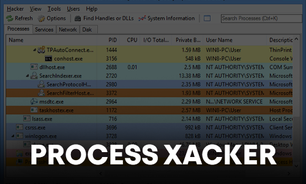
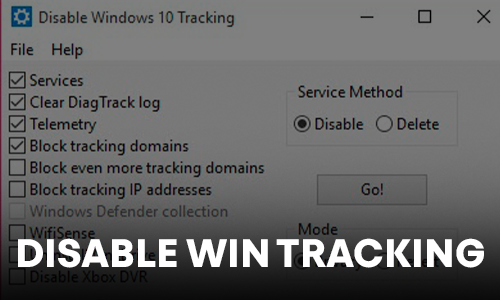
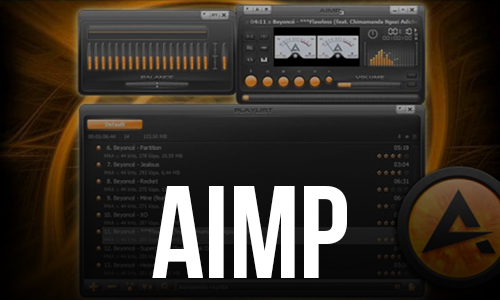
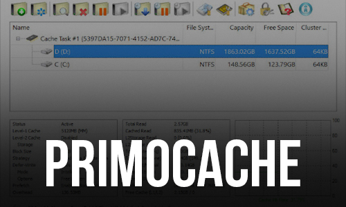
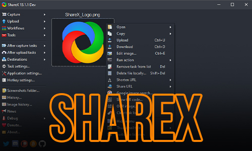

11.09.2022

Adobe Premiere Pro — это профессиональная программа для видеомонтажа, которая позволяет редактировать видеофайлы любого формата. С ее помощью можно импортировать видео, выполнять кадрирование, добавлять анимацию, видеоэффекты и т.д
Скачать сейчас! Подробнее
12.09.2022
Visual Studio Code – это один из наиболее удобных и популярных редакторов кода, разработанный корпорацией Microsoft.
Он поддерживается всеми актуальными операционными системами: Windows, Linux и macOS.

05.06.2022
Defender Control позволяет отключить встроенный антивирус Windows 11 или Windows 10, Microsoft Defender или Защитник Windows, и предотвратить конфликты с другими антивирусными решениями, установленными на вашем компьютере.
Скачать сейчас! Подробнее05.06.2022
iFun Screen Recorder – программа для записи видео с экрана, позволяющая записывать видео с отдельных окон, полноэкранные видео или выбранные участки экрана.
Скачать сейчас! Подробнее
05.06.2022
Picasa - приложение, которое позволяет просматривать и упорядочивать изображения на вашем компьютере. Это программное обеспечение,с помощью которого Вы можете искать,редактировать,превращать фотографии в "фильм" или коллаж,создавать слайд-шоу и многое другое.
Скачать сейчас! Подробнее
05.06.2022
VLC — бесплатный и свободный кросс-платформенный медиаплеер и медиаплатформа с открытым исходным кодом. VLC воспроизводит множество мультимедийных файлов, а также DVD, Audio CD, VCD и сетевые трансляции.
Скачать сейчас! Подробнее
11.06.2022
Everything — это бесплатная утилита для Windows, позволяющая практически мгновенно находить файлы и папки по их именам, размерам, датам, атрибутам и др.
Скачать сейчас! Подробнее
03.07.2022
Process Hacker - бесплатная утилита с открытым исходным кодом для мониторинга системных процессов и служб. Используемая как замена или дополнение диспетчера задач Windows.
Скачать сейчас! Подробнее
03.07.2022
Disable Win Tracking — компактное по размеру программное решение, позволяющее отключать некоторые шпионские модули в Windows 10. Средство призвано защитить конфиденциальность пользователей при работе в операционной системе.
Скачать сейчас! Подробнее
05.06.2022
AIMP — небольшой по размеру,бесплатный мультимедийный плеер,оптимизирован для быстрого запуска и минимальной загрузки системы.Программа создавалась по замечаниям пользователей других плееров, так что в нем сосредоточилось все самое лучшее и даже больше.
Скачать сейчас! Подробнее
05.06.2022
Caramba Switcher - это принципиально новый, бесплатный автоматический переключатель раскладки клавиатуры.На одно ручное переключение раскладки уходит около секунды, а на исправление неправильно набранного – несколько секунд.
Скачать сейчас! Подробнее
05.06.2022
PrimoCache - это программа, которая позволяет ускорить работу жесткого диска за счет выделения определенного объема оперативной памяти под кэш накопителей. Работает она как с SSD, так и с HDD-дисками
Скачать сейчас! Подробнее
05.06.2022
ShareX - мощная многофункциональная утилита для снятия скриншотов с экрана монитора с возможностью использования дополнительных инструментов для их редактирования и обработки.
Скачать сейчас! Подробнее